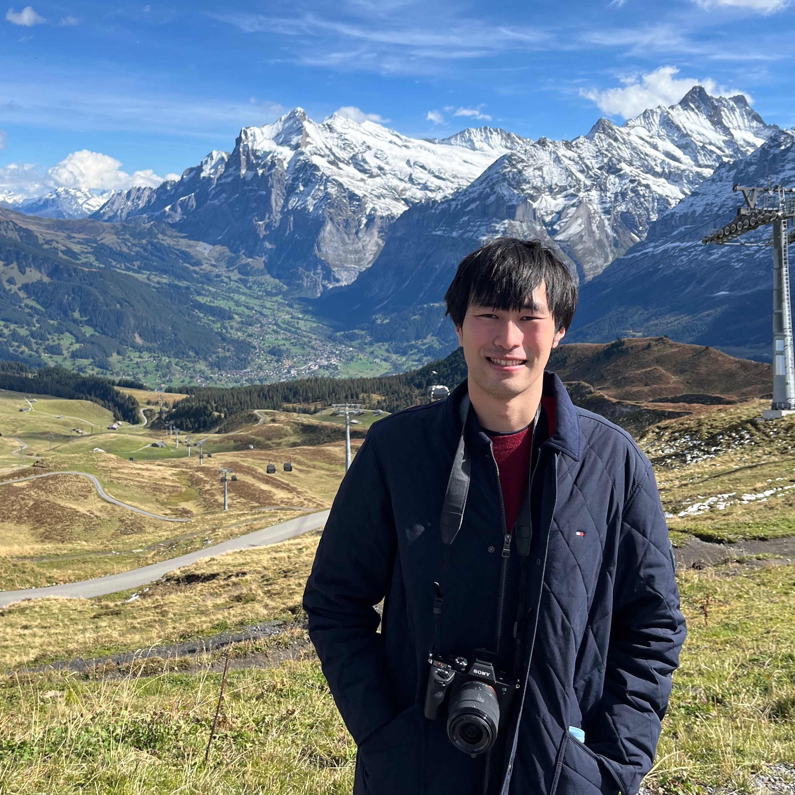

Student at Speech and Audio Processing Lab [link], supervised by Professor Tatsuya Kawahara. Research theme is "Bidirectional Transformer-based Language Modeling for End-to-End Automatic Speech Recognition".
2022-current, Sony Group CorporationResearch enginner at Speech and Language AI Lab. Joint research project with Carnegie Mellon University [link] (Professor Shinji Watanabe).
2025-current, Kyoto University, Graduate School of InformaticsPhD student at Speech and Audio Processing Lab [link], supervised by Professor Tatsuya Kawahara.
[LinkedIn] [GitHub] [X (Twitter)] [Google Scholar]